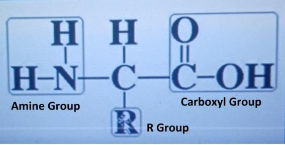
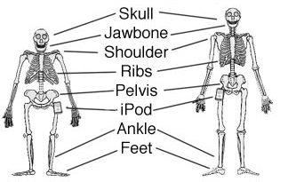
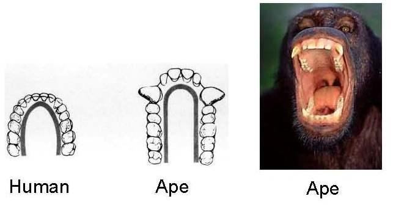
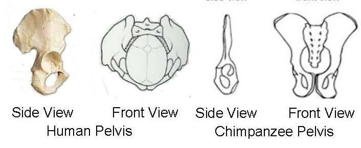
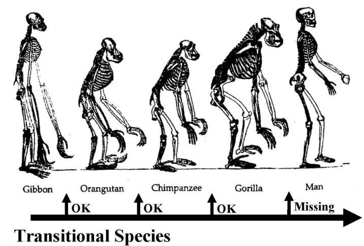
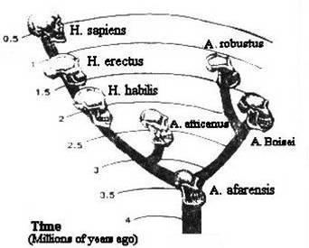

He created you from a Soul Single (Nafsin- Wahidatin / GUT Force+), then created favorable Pairs (DNA Double Helix after fertilization), and he sent down for you of the cattle eight Pairs (four pairs of domestic cattle), He creates you in the wombs of your mothers—creation after creation—Three Tortures (on Him). That Allah is your Lord; for Him is the dominion. There is no god but He. Then how are you turned away? If you reject, Truly God has no need of you, but He likes not ingratitude from His servants. If you are grateful, He is pleased with you. No bearer of burdens can bear the burden of another. In the end, to your Lord is your return when He will tell you the truth of all that you did; for He knows well all that is in the breasts (qalbs / minds)‖ [Al Quran 39: 6-7]
তিনি আপনাকে একটি আত্মা থেকে সৃষ্টি করেছেন (নাফসিন- ওয়াহিদাতিন / জিইউটি ফোর্স+), তারপর অনুকূল জোড়া তৈরি করেছেন (নিষিক্তকরণের পরে ডিএনএ ডাবল হেলিক্স), এবং তিনি তোমাদের জন্য গবাদি পশু থেকে আট জোড়া (চার জোড়া গৃহপালিত গবাদিপশু) নাযিল করেছেন, তিনি তোমাদের মায়ের গর্ভে সৃষ্টি করেছেন-সৃষ্টির পর সৃষ্টি-তিনটি অত্যাচার (তার উপর)। যে আল্লাহ তোমাদের পালনকর্তা; তাঁর জন্য রাজত্ব। তিনি ছাড়া কোন উপাস্য নেই। তাহলে তুমি কিভাবে মুখ ফিরিয়ে নিলে? যদি তুমি প্রত্যাখ্যান করো, তাহলে সত্যই আল্লাহর তোমার কোন প্রয়োজন নেই, কিন্তু তিনি তাঁর বান্দাদের অকৃতজ্ঞতা পছন্দ করেন না। যদি তুমি কৃতজ্ঞ হও, তবে তিনি তোমার প্রতি সন্তুষ্ট। কোন বোঝা বহনকারী অন্যের বোঝা বহন করতে পারে না। পরিশেষে, তোমার প্রভুর কাছেই তোমার প্রত্যাবর্তন, যখন তিনি তোমাকে বলবেন তুমি যা করেছিলে তার সত্যতা; কেননা তিনি বুকের মধ্যে যা আছে সবই জানেন।'' [আল কুরআন ৩৯:৬-৭]
Each human is custom made. He is getting developed. Each has his DNA, and his nafs gets programmed in the process of development in the mother‘s womb. After his death, his nafs gets fixed. His resurrection will be easy with the designed nafs and a Set of DNA molecule (46) collected from the remains of his earthly body. 4. Creation of Adam
প্রতিটি মানুষ কাস্টম তৈরি করা হয়. সে বিকশিত হচ্ছে। প্রত্যেকেরই তার ডিএনএ রয়েছে এবং তার নফসগুলি মায়ের গর্ভে বিকাশের প্রক্রিয়াতে প্রোগ্রাম করা হয়। তার মৃত্যুর পর তার নফস স্থির হয়ে যায়। তার পুনরুত্থান সহজ হবে ডিজাইন করা নফস এবং তার পার্থিব দেহের অবশিষ্টাংশ থেকে সংগৃহীত ডিএনএ অণুর একটি সেট (46) দিয়ে। 4. আদম সৃষ্টি
There are four verses that help us understand how Allah created Adam:
চারটি আয়াত রয়েছে যা আমাদের বুঝতে সাহায্য করে কিভাবে আল্লাহ আদমকে সৃষ্টি করেছেন:
―Glory to God Who created all things that the earth produces as well as their own kind and things of which they have no knowledge from Pairs (double helix DNA molecules)‖ [Al Quran 36:36]
"আল্লাহর মহিমা যিনি পৃথিবী থেকে যা কিছু উৎপন্ন করে, সেইসাথে তাদের নিজস্ব ধরণের এবং যেগুলির সম্পর্কে তাদের কোন জ্ঞান নেই (ডাবল হেলিক্স ডিএনএ অণু) সৃষ্টি করেছেন।" [আল কুরআন 36:36]
The above verse means that Allah created Adam from existing double helix DNA molecule (Pair) that produces all earthly creatures from Amoeba to Apes. However, Adam did not appear as a result of biological evolution. Allah created him separately, which is said in the following verse:
উপরের আয়াতের অর্থ হল আল্লাহ আদমকে বিদ্যমান ডাবল হেলিক্স ডিএনএ অণু (জোড়া) থেকে সৃষ্টি করেছেন যা অ্যামিবা থেকে এপস পর্যন্ত সমস্ত পার্থিব প্রাণী তৈরি করে। তবে জৈবিক বিবর্তনের ফলে আদমের আবির্ভাব ঘটেনি। আল্লাহ তাকে আলাদাভাবে সৃষ্টি করেছেন, যা নিম্নোক্ত আয়াতে বলা হয়েছে:
―The One Who made good everything He created, and He began the creation of man from tinin (lute).‖ [Al Quran 32:7]
"যিনি তাঁর সৃষ্ট সবকিছুকে উত্তমরূপে সৃষ্টি করেছেন এবং তিনি তিনিন (লুট) থেকে মানুষের সৃষ্টি শুরু করেছেন।" [আল কুরআন 32:7]
―Tinin‖ (Lute) mentioned in above verse is deliberately discussed in Section-2 of Chapter-23. It is a zygote (represented by a lute). Above verse means that after evolving required plants and animals, Allah personally created Adam from a zygote that He may have collected from an ape-like creature. Allah engineered the zygote to produce a human. He supplied the genome with amino acid, as it is said in the following verse: ―We created man from sauce (salsalin) of black mud (hama-in), altered (masnunin)‖; [Al Quran 15:26]
উপরের আয়াতে উল্লিখিত ‘তিনিন’ (লুট) অধ্যায়-২৩-এর ধারা-২-এ ইচ্ছাকৃতভাবে আলোচনা করা হয়েছে। এটি একটি জাইগোট (একটি ল্যুট দ্বারা প্রতিনিধিত্ব করা হয়)। উপরের আয়াতের অর্থ হল প্রয়োজনীয় উদ্ভিদ ও প্রাণীর বিকাশের পর, আল্লাহ ব্যক্তিগতভাবে আদমকে একটি জাইগোট থেকে সৃষ্টি করেছেন যা তিনি একটি বানরের মতো প্রাণী থেকে সংগ্রহ করেছেন। আল্লাহ জাইগোটকে মানুষ তৈরি করার জন্য তৈরি করেছেন। তিনি জিনোমকে অ্যামিনো অ্যাসিড সরবরাহ করেছিলেন, যেমনটি নিম্নলিখিত আয়াতে বলা হয়েছে: “আমরা মানুষকে কালো কাদা (হামা-ইন), পরিবর্তিত (মাসনুনিন) সস (সালসালিন) থেকে সৃষ্টি করেছি”; [আল কুরআন 15:26]
Amino acid is similar to soy sauce in taste and appearance. It is a carbon based compound. So, it is mentioned in above verse as 'sauce of black mud'. A hydrogen, an amine group (NH2), a carboxyl group (COOH), and a R group are bonded to the central carbon of a molecule of Amino Acid. R-group is the location where different elements are inserted to make 20 different types of amino acid. So, it is altered (masnunin).
অ্যামিনো অ্যাসিড স্বাদ এবং চেহারাতে সয়া সসের মতো। এটি একটি কার্বন ভিত্তিক যৌগ। সুতরাং, উপরের আয়াতে এটিকে 'কালো মাটির চাটনি' বলে উল্লেখ করা হয়েছে। একটি হাইড্রোজেন, একটি অ্যামাইন গ্রুপ (NH2), একটি কার্বক্সিল গ্রুপ (COOH), এবং একটি R গ্রুপ অ্যামিনো অ্যাসিডের একটি অণুর কেন্দ্রীয় কার্বনের সাথে আবদ্ধ। আর-গ্রুপ হল সেই অবস্থান যেখানে 20টি বিভিন্ন ধরণের অ্যামিনো অ্যাসিড তৈরি করতে বিভিন্ন উপাদান প্রবেশ করানো হয়। সুতরাং, এটি পরিবর্তিত (মাসনুনিন)।
FIGURE 24.23: Generic Structure of Amino Acid

চিত্র 24_23 / Figure 24_23
চিত্র 24.23: অ্যামিনো অ্যাসিডের সাধারণ গঠন
চিত্র 24_23 / Figure 24_23
It is estimated that the human body is created from 80,000 to 400,000 different types of proteins. The proteins are made by DNA from 20 types of amino acids available in the cell. Thus, Allah produced the seed (a zygote) of Adam and supplied it with the nourishment (amino acid / salsalin hama-in masnunin). The seed grew and Adam was created. This is the basic way of creating a human. On the day of resurrection, humans will grow in this way. But, an additional way of creation is adopted for the earthly life, as the following verse says:
এটি অনুমান করা হয় যে মানবদেহ 80,000 থেকে 400,000 বিভিন্ন ধরণের প্রোটিন থেকে তৈরি হয়। কোষে পাওয়া 20 ধরনের অ্যামিনো অ্যাসিড থেকে প্রোটিনগুলি ডিএনএ দ্বারা তৈরি হয়। এইভাবে, আল্লাহ আদমের বীজ (একটি জাইগোট) তৈরি করেছিলেন এবং তাকে পুষ্টি (অ্যামিনো অ্যাসিড/সালসালিন হামা-ইন মাসনুনিন) দিয়েছিলেন। বীজ বেড়ে ওঠে এবং আদমকে সৃষ্টি করা হয়। এটি একটি মানুষ তৈরির মৌলিক উপায়। কেয়ামতের দিন মানুষ এভাবেই বেড়ে উঠবে। কিন্তু, পার্থিব জীবনের জন্য সৃষ্টির একটি অতিরিক্ত উপায় অবলম্বন করা হয়েছে, যেমনটি নিম্নোক্ত আয়াতে বলা হয়েছে:
―It is He Who has created man from water, then has He established relationships of lineage and marriage; for thy Lord has power.‖ [Al Quran 25:54]
তিনিই মানুষকে পানি থেকে সৃষ্টি করেছেন, তারপর বংশ ও বিবাহের সম্পর্ক স্থাপন করেছেন; কারণ তোমার প্রভুর ক্ষমতা আছে।'' [আল কুরআন 25:54]
In earthly way of creation, a human needs a mother and a father. They make the family with love and affection.
পার্থিব সৃষ্টিতে একজন মানুষের প্রয়োজন একজন মা এবং একজন পিতা। তারা প্রেম-ভালোবাসা দিয়ে সংসার করে।
5. Missing Link
5. অনুপস্থিত লিঙ্ক
We have no disagreement with biological evolution. The Quran indicates that Allah evolved living beings from lower to higher forms (waterborne creatures-, creeping creatures-, bipedal creatures-, and four-footed animals – Al Quran 24:45). The Quran differs only in the case of humans, as it states that Allah created them separately by Himself. Therefore, we will need to determine whether humans fit into the chain of biological evolution. In other words, we have to uncover the 'Missing Link' in light of the Quran and modern science. In the following paragraphs, I discuss the (so-called) evolution of hominids and present my arguments in favor of the Missing Link. After the publication of Darwin‘s ―On the Origin of Species by Means of Natural Selection‖ in 1857 and ―The Descent of Man and Selection in Relation to Sex‖ in 1871, many began to believe that human being evolved just from the existing apes. The fossil finds of the last two hundred years and beyond do not support the idea that humans evolved from modern apes (chimpanzees, orangutans, gorillas, etc.). The theory holds up until the evolution of chimpanzees, but when attempting to include humans, the theory falters. The chest and hand bones of humans and modern apes are similar, but there are significant differences in other parts of the body. These wide gaps require transitional species to bridge them, which have not yet been found. The following are areas of notable differences.
জৈবিক বিবর্তনের সাথে আমাদের কোন দ্বিমত নেই। কুরআন ইঙ্গিত করে যে আল্লাহ জীবন্ত প্রাণীকে নিম্ন থেকে উচ্চতর আকারে বিবর্তিত করেছেন (জলবাহী প্রাণী-, লতানো প্রাণী-, দ্বিপাক্ষিক প্রাণী- এবং চার পায়ের প্রাণী - আল কুরআন 24:45)। কুরআন শুধুমাত্র মানুষের ক্ষেত্রে ভিন্ন, কারণ এটি বলে যে আল্লাহ তাদের আলাদাভাবে নিজের দ্বারা সৃষ্টি করেছেন। অতএব, আমাদের নির্ধারণ করতে হবে যে মানুষ জৈবিক বিবর্তনের শৃঙ্খলে ফিট করে কিনা। অন্য কথায়, কুরআন ও আধুনিক বিজ্ঞানের আলোকে আমাদের 'মিসিং লিঙ্ক' উন্মোচন করতে হবে। নিম্নলিখিত অনুচ্ছেদে, আমি হোমিনিডের (তথাকথিত) বিবর্তন নিয়ে আলোচনা করি এবং মিসিং লিঙ্কের পক্ষে আমার যুক্তি উপস্থাপন করি। 1857 সালে ডারউইনের "অন দ্য অরিজিন অফ স্পেসিস বাই মিনস অফ ন্যাচারাল সিলেকশন" এবং 1871 সালে "দ্য ডিসেন্ট অফ ম্যান অ্যান্ড সিলেকশান ইন রিলেশন টু সেক্স" প্রকাশিত হওয়ার পর, অনেকে বিশ্বাস করতে শুরু করে যে মানুষ কেবল বিদ্যমান বনমানুষ থেকে বিবর্তিত হয়েছে। গত দুইশত বছর এবং তার পরে পাওয়া জীবাশ্ম এই ধারণাকে সমর্থন করে না যে মানুষ আধুনিক বনমানুষ (শিম্পাঞ্জি, ওরাঙ্গুটান, গরিলা ইত্যাদি) থেকে বিবর্তিত হয়েছে। শিম্পাঞ্জিদের বিবর্তন না হওয়া পর্যন্ত এই তত্ত্বটি টিকে থাকে, কিন্তু যখন মানুষকে অন্তর্ভুক্ত করার চেষ্টা করা হয়, তখন তত্ত্বটি ব্যর্থ হয়। মানুষ এবং আধুনিক বনমানুষের বুক ও হাতের হাড় একই রকম, তবে শরীরের অন্যান্য অংশে উল্লেখযোগ্য পার্থক্য রয়েছে। এই বিস্তৃত ব্যবধানগুলিকে সেতু করার জন্য ট্রানজিশনাল প্রজাতির প্রয়োজন, যা এখনও পাওয়া যায়নি। নিম্নলিখিত উল্লেখযোগ্য পার্থক্য ক্ষেত্র.
FIGURE 24.24: Areas of Major Difference

চিত্র 24_24 / Figure 24_24
চিত্র 24.24: প্রধান পার্থক্যের ক্ষেত্র
চিত্র 24_24 / Figure 24_24
Skull: The cranial capacity of a human being is 1450 cc in average, whereas the cranial capacity of an ape is from 325 cc to 659 cc only. FIGURE 24.25: Skull

চিত্র 24_25 / Figure 24_25
মাথার খুলি: একজন মানুষের কপালের ক্ষমতা গড়ে 1450 সিসি, যেখানে একটি বানরের ক্র্যানিয়াল ক্ষমতা 325 সিসি থেকে 659 সিসি পর্যন্ত। চিত্র 24.25: মাথার খুলি
চিত্র 24_25 / Figure 24_25
Face: Apes have smaller chin, large jawbone and teeth, flat nose, higher brow ridge, receding fore head, thick skull bone, and a thicker part at the hind side of the skull called occipital torus (occipital torus joins neck muscles with head. It is found in the apes only).
মুখ: বনমানুষের ছোট চিবুক, বড় চোয়ালের হাড় এবং দাঁত, চ্যাপ্টা নাক, উচ্চতর ভ্রুকুটি, সামনের দিকের মাথা, পুরু খুলির হাড় এবং মাথার খুলির পিছনের দিকে একটি মোটা অংশ যাকে বলা হয় অসিপিটাল টরাস (অসিপিটাল টরাস মাথার সাথে ঘাড়ের পেশী যুক্ত করে। এটি কেবল বানরের মধ্যে পাওয়া যায়)।
FIGURE 24.26: Dentition

চিত্র 24_26 / Figure 24_26
চিত্র 24.26: দাঁত
চিত্র 24_26 / Figure 24_26
Head-Neck Attachment: Humans have head-neck attachment suitable for an upright creature. But head-neck attachment of an ape is suitable for four-footed animals. FIGURE 24.27: Head-Neck Attachment

চিত্র 24_27 / Figure 24_27
হেড-নেক অ্যাটাচমেন্ট: মানুষের হেড-নেক অ্যাটাচমেন্ট আছে একটা খাঁড়া প্রাণীর জন্য উপযুক্ত। তবে বানরের মাথা-ঘাড় সংযুক্তি চার পায়ের প্রাণীদের জন্য উপযুক্ত। চিত্র 24.27: হেড-নেক অ্যাটাচমেন্ট
চিত্র 24_27 / Figure 24_27
Pelvis: Pelvis of a human is structured for sustained two- legged standing and walking. But pelvis of an ape is not suitable for prolonged two-legged standing and more than a few steps of bipedal walking.
পেলভিস: একজন মানুষের পেলভিস টেকসই দুই পায়ে দাঁড়ানো এবং হাঁটার জন্য গঠন করা হয়। কিন্তু বানরের শ্রোণী দীর্ঘ দুই পায়ে দাঁড়ানো এবং কয়েক ধাপের বেশি দ্বিপাক্ষিক হাঁটার জন্য উপযুক্ত নয়।
FIGURE 24.28: Pelvis Legs: Legs of humans are long and well built. Feet are totally different.

চিত্র 24_28 / Figure 24_28
চিত্র 24.28: পেলভিস পা: মানুষের পা লম্বা এবং সুগঠিত। পা সম্পূর্ণ আলাদা।
চিত্র 24_28 / Figure 24_28
FIGURE 24.29: Foot and Leg

চিত্র 24_29 / Figure 24_29
চিত্র 24.29: পা এবং পা
চিত্র 24_29 / Figure 24_29
Body proportion of ape and human differs greatly. Apes have long, well built, and strong hands and comparatively short and weaker legs. It is opposite in case of humans.
বানর এবং মানুষের দেহের অনুপাত ব্যাপকভাবে আলাদা। বনমানুষের লম্বা, সুগঠিত এবং শক্তিশালী হাত এবং তুলনামূলকভাবে ছোট ও দুর্বল পা থাকে। মানুষের ক্ষেত্রে এর বিপরীত।
FIGURE 24.30: Modern Apes and Human Skeletons A difference is not necessarily a negative aspect; otherwise, there would be differences between two species. However, a wide difference is a significant matter. It requires transitional species to connect them. It is evident that the Gibbon, Orangutan, Chimpanzee, and Gorilla evolved from one another, mainly differing in size. But humans exhibit wide differences, particularly in the skull and physical structure related to locomotion. Early evolutionists believed that the sensitive hands of some modern apes (such as chimpanzees, orangutans, gorillas, etc.) led to the development of their brains. As a result, they descended from the trees and began walking on two legs. Due to bipedal walking, their legs grew longer and stronger, eventually evolving into humans. However, after more than two hundred years of searching, no fossil of modern apes has been found that shows signs of an increasing brain size, nor has any fossil been found that demonstrates development in the pelvis and legs. Therefore, this idea has been proven wrong. Now, evolutionists suggest that two branches evolved from a common hypothetical ancestor: Hominids and Pongids. In the Hominid branch (family), humans evolved, while in the Pongid branch, modern apes such as orangutans, gorillas, and chimpanzees evolved. Evolutionists suggest that they have found a few fossils from the Hominid branch. They are continuing their search for fossils of ape-like creatures that could further support the hypothetical existence of the Hominid branch. However, even after decades have passed, the fossil record remains sparse. The finds are mostly fragments of craniums, jaws, teeth, and hand bones. Using these controversial fragments, the skeletons of fictitious transitional creatures have been reconstructed to form the Hominid branch. These reconstructions depict the supposed progression of this hypothetical branch as follows: a. Australopithecus (genus) b. Homo Habilis c. Homo Erectus d. Homo Neanderthalensis. e. Homo Sapiens (Human beings)

চিত্র 24_30 / Figure 24_30
চিত্র 24.30: আধুনিক বনমানুষ এবং মানব কঙ্কাল একটি পার্থক্য অগত্যা একটি নেতিবাচক দিক নয়; অন্যথায়, দুটি প্রজাতির মধ্যে পার্থক্য থাকবে। যাইহোক, একটি বিস্তৃত পার্থক্য একটি উল্লেখযোগ্য বিষয়। তাদের সংযোগ করার জন্য ট্রানজিশনাল প্রজাতির প্রয়োজন। এটা স্পষ্ট যে গিবন, ওরাঙ্গুটান, শিম্পাঞ্জি এবং গরিলা একে অপর থেকে বিবর্তিত হয়েছে, প্রধানত আকারে ভিন্ন। কিন্তু মানুষ ব্যাপক পার্থক্য প্রদর্শন করে, বিশেষ করে মাথার খুলি এবং লোকোমোশন সম্পর্কিত শারীরিক গঠনে। প্রাথমিক বিবর্তনবাদীরা বিশ্বাস করতেন যে কিছু আধুনিক বনমানুষের (যেমন শিম্পাঞ্জি, ওরাঙ্গুটান, গরিলা ইত্যাদি) সংবেদনশীল হাত তাদের মস্তিষ্কের বিকাশ ঘটায়। ফলে তারা গাছ থেকে নেমে দুই পায়ে হাঁটতে থাকে। দ্বিপাক্ষিক হাঁটার কারণে, তাদের পা দীর্ঘ এবং শক্তিশালী হয়ে ওঠে, অবশেষে মানুষের মধ্যে বিবর্তিত হয়। যাইহোক, দুইশত বছরেরও বেশি অনুসন্ধানের পরে, আধুনিক বনমানুষের এমন কোনো জীবাশ্ম পাওয়া যায়নি যা মস্তিষ্কের আকার বৃদ্ধির লক্ষণ দেখায়, বা শ্রোণী ও পায়ের বিকাশের প্রমাণ দেয় এমন কোনো জীবাশ্মও পাওয়া যায়নি। অতএব, এই ধারণা ভুল প্রমাণিত হয়েছে. এখন, বিবর্তনবাদীরা পরামর্শ দেন যে দুটি শাখা একটি সাধারণ অনুমানমূলক পূর্বপুরুষ থেকে বিবর্তিত হয়েছে: হোমিনিডস এবং পঙ্গিডস। হোমিনিড শাখায় (পরিবার) মানুষ বিবর্তিত হয়েছে, যখন পঙ্গিড শাখায়, আধুনিক বনমানুষ যেমন ওরাঙ্গুটান, গরিলা এবং শিম্পাঞ্জি বিবর্তিত হয়েছে। বিবর্তনবাদীরা পরামর্শ দেন যে তারা হোমিনিড শাখা থেকে কয়েকটি জীবাশ্ম খুঁজে পেয়েছেন। তারা বানরের মতো প্রাণীর জীবাশ্মের জন্য তাদের অনুসন্ধান চালিয়ে যাচ্ছে যা হোমিনিড শাখার অনুমানিক অস্তিত্বকে আরও সমর্থন করতে পারে। যাইহোক, কয়েক দশক পেরিয়ে গেলেও, জীবাশ্মের রেকর্ড বিরল রয়ে গেছে। আবিষ্কৃত বেশিরভাগই ক্রেনিয়াম, চোয়াল, দাঁত এবং হাতের হাড়ের টুকরো। এই বিতর্কিত টুকরোগুলি ব্যবহার করে, কল্পিত ক্রান্তিকালীন প্রাণীদের কঙ্কাল হোমিনিড শাখা গঠনের জন্য পুনর্গঠন করা হয়েছে। এই পুনর্গঠনগুলি এই অনুমানমূলক শাখার অনুমিত অগ্রগতিকে নিম্নরূপ চিত্রিত করে: ক. Australopithecus (genus) খ. হোমো হ্যাবিলিস গ. হোমো ইরেক্টাস d. হোমো নিয়ান্ডারথালেনসিস। e হোমো স্যাপিয়েন্স (মানুষ)
চিত্র 24_30 / Figure 24_30
FIGURE 24.31: Hominid

চিত্র 24_31 / Figure 24_31
চিত্র 24.31: হোমিনিড
চিত্র 24_31 / Figure 24_31